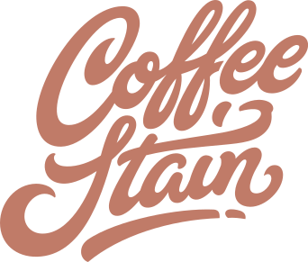

Ranglister Software, cloud & internet Coffee Stain

Coffee Stain
Et blik på de samme fund, ikke en ny score. Sådan virker det
Kort fortalt
Scoren er 58 af 100: en svensk spiludvikler (bl.a. Satisfactory og Valheim), hvor aktien er rimeligt prissat, men indtjeningen hænger på få hits. Omsætningen faldt 12 % sidste regnskabsår, nye spil har skuffet, og ledelsen skærer i udviklingen. Selskabet har 705 mio. SEK mere i kontanter end gæld, og et bestyrelsesmedlem har købt aktier for ca. 31 mio. SEK. Analytikerne ligger ca. 36 % over kursen.
En god forretning med et reelt spørgsmålstegn: prisen, en revne eller begge dele.
Største fradrag
- Multipler mod historik og peers−7
- Hit- og IP-koncentration−6
- Vækstens kvalitet−5
Styrker
- Nettokasse+3
- Insiderkøb+2
Sådan er scoren bygget op
Fra 100 til 58, trin for trin: point trækkes fra for forretningen, prisen og revnerne, lægges til for dokumenterede styrker, og så følger tre datajusteringer.
Hold musen over et trin eller vælg det for at se, hvad der drev det. Trin med fund åbner dem nedenfor.
Nøgletal
Pr. 6 nov. 2026. Analytikernes kursmål er ofte optimistiske; læs opsiden som et fingerpeg, ikke en prognose.
- Pris
- 19.10 SEK
- Analytikernes mediankursmål
- 26.00 SEK
- Opside til median
- +36.2%
- Analytikere
- 6
- Kursmålsinterval
- 18.50 – 32.00 SEK
- 52-ugers ændring
- –
- P/E (historisk)
- 88.8
- Forward P/E
- 17.1
- PEG
- 2.85
Fund
Hvert fradrag og hvert plus med sin kilde. Åbn et trin for at læse dem.
Forretning
Bliver virksomheden stærkere, ikke bare større? · 4 fund−16 af −30
- −4MarginRapporteret EBIT-margin kun 6 % i Q1 og 10 % TTM pga. afskrivninger, men cash EBIT-margin 38 % i Q1 (95 mio. SEK). Bruttomarginen er ca. 98 %; problemet er afskrivninger og nedskrivninger, ikke prissætning.
- −4ROICROIC 3,5 % TTM og 4,6 % i FY25/26 (22,6 % året før) pga. goodwill og immaterielle aktiver på ca. 2,8 mia. SEK fra Embracer-tiden.
- −5Vækstens kvalitetOmsætningen faldt 12 % i FY25/26 og var flad TTM (1.030 mio. SEK); Q1 steg 37 % drevet af Satisfactory. Hitdrevet omsætning med store udsving fra kvartal til kvartal.
- −3KapitalallokeringAktiveret udvikling for 156–226 mio. SEK om året og nedskrivninger på 40 mio. TTM (81 mio. året før). Ledelsen skærer nu de løbende investeringer 'væsentligt', fordi flere projekter ikke har levet op til planen.
Pris
Dagens multipler mod selskabets egen historik og dets sammenlignelige selskaber. · 1 fund−7 af −35
- −7Multipler mod historik og peersEV ca. 3.673 mio. SEK ≈ 13x reelt FCF (ca. 277 mio. efter aktiveret udvikling og leasing), forward P/E 14,6, men EV/EBIT 33 på rapporterede tal. Kort historik som børsnoteret (fra 2025). Rimeligt, men ikke billigt for et hitdrevet selskab med flad omsætning.
Revner
Cash flow, kunder, gæld, insidere, guidance og det, der ligger bag hovedtallene. · 4 fund−13 af −35
- −6Hit- og IP-koncentrationFå spil (især Satisfactory og Valheim) står for størstedelen af indtjeningen, og 86 % af omsætningen kommer fra USA (primært Steam). Et svagt år for 1–2 titler slår direkte igennem.
- −4Svage nye titlerDeep Rock Galactic: Rogue Core (Fellowship Season 3) klarede sig dårligere end planlagt, og Q1-omsætning (253 mio. SEK) og cash EBIT (95 mio.) lå under konsensus (261 og 103 mio.). Ledelsen vil skære ned, hvor 'traction ikke længere understøtter casen'.
- −2PlatformsafhængighedDistributionen er stærkt afhængig af Steam (Valve), hvis vilkår og algoritmer selskabet ikke kontrollerer; konsoludgivelser (PS5/Switch 2) er først ved at komme.
- −1EmissionsmandatGeneralforsamlingen 24/9-2026 gav bestyrelsen mandat til at udstede B-aktier, konvertible og/eller warrants svarende til op til 10 % af aktierne.
Plus
Kun dokumenterede styrker. · 2 fund+5 af +15
- +3NettokasseNettokasse 705 mio. SEK pr. 30/6-2026 (ca. 16 % af markedsværdien) og næsten ingen gæld; kvartalsudbytte på 0,17 SEK (0,68 om året ≈ 152 mio.) ligger under det reelle FCF.
- +2InsiderkøbBestyrelsesmedlem Lars Wingefors købte ca. 1,75 mio. aktier til ca. 17,89 SEK (ca. 31 mio. SEK) i slutningen af august 2026.
Forbehold
Det, scoren ikke fanger, eller hvor dataene er svage.
Også i Software, cloud & internet
De højeste scorer i samme branche.